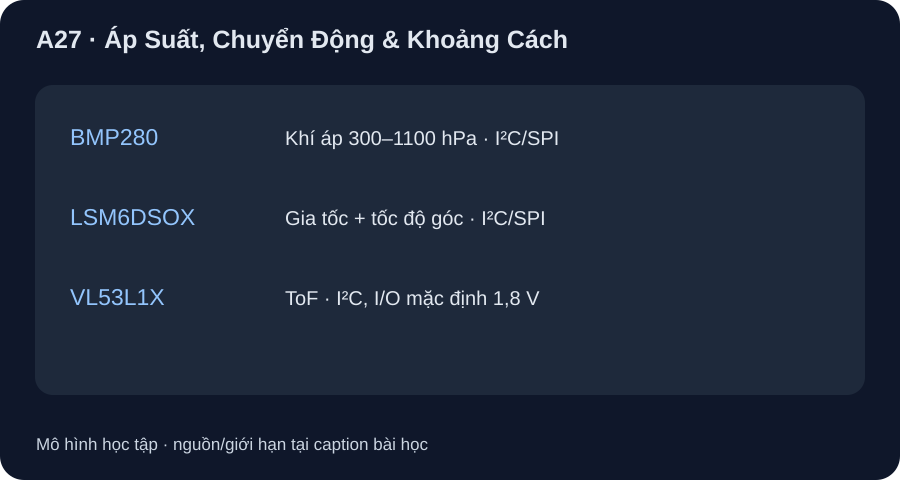

Áp Suất, Chuyển Động & Khoảng Cách
Chọn sensor theo môi trường và đặc tính phép đo, không chỉ theo số dải lớn nhất.
- Nêu dải, nguồn/I/O, độ phân giải/sai số và thời gian theo điều kiện của BMP280, LSM6DSOX, VL53L1X.
- So pressure sensor, IMU/PIR và ToF/siêu âm theo đại lượng thực sự quan sát.
- Nhận ra cổng điện áp I/O và điều kiện quang học có thể loại một lựa chọn.

Đọc hình bằng chữ
BMP280 đo áp suất không khí và có I²C hoặc SPI. LSM6DSOX có gia tốc kế ba trục và con quay ba trục, thông số tùy full-scale và output-data-rate. VL53L1X phát tia quang và đo thời gian bay để lấy khoảng cách, dùng I²C nhưng mức I/O mặc định 1,8 volt. Ba nhánh không chia sẻ dải hoặc sai số.
1. Áp suất: BMP280 đo khí quyển
Bosch BMP280 datasheet Table 2/Table 13 mô tả cảm biến áp suất tuyệt đối piezoresistive, dải 300–1100 hPa; VDD 1,71–3,6 V, VDDIO 1,2–3,6 V, I²C/SPI. Độ phân giải output 0,0016 hPa ở mode ultra-high-resolution không đồng nghĩa sai số ±0,0016 hPa. Absolute accuracy typical ±1 hPa chỉ trong 950–1050 hPa, 0…40 °C; relative accuracy ±0,12 hPa typical là điều kiện riêng 700–900 hPa ở 25 °C. Thời đo typical 5,5 ms thuộc preset ultra-low-power, không phải mọi cấu hình oversampling/filter. BMP280 không thay pressure transducer cho khí nén vượt 1100 hPa.
2. Chuyển động: IMU đo kinematics, PIR phát hiện biến thiên hồng ngoại
ST LSM6DSOX datasheet Table 2 tích hợp gia tốc kế 3 trục và con quay 3 trục. Full-scale gia tốc chọn ±2/4/8/16 g, góc chọn ±125/250/500/1000/2000 dps, nguồn analog 1,71–3,6 V; giao tiếp I²C/SPI/I3C tùy mode. Ở ±2 g, sensitivity typical là 0,061 mg/LSB; chọn ODR 104 Hz là một cấu hình khả dĩ, không chứng minh độ trễ toàn hệ 1/104 s. Kết quả chịu bias/noise, hướng lắp và lọc; full-scale lớn giảm nguy cơ bão hòa nhưng có thể làm bước mã thô hơn. Datasheet không đưa một số “độ chính xác vị trí” có thể áp cho tích phân gia tốc mọi thời gian. PIR như ở D40 phát hiện biến thiên hồng ngoại của cảnh, không cho gia tốc/góc quay; muốn so thời gian trễ/tầm phát hiện phải chọn module và optics cụ thể, chưa có ở bài này.
3. Khoảng cách: ToF so IR/siêu âm
ST VL53L1X Rev. 8 dùng time of flight, AVDD 2,6–3,5 V và I²C. Dải gần được bảo đảm từ 4 cm; con số đến 4 m phụ thuộc mục tiêu, độ phản xạ, ánh sáng, field of view và timing budget. Bảng hãng lấy ví dụ nominal 2,8 V/23 °C, long mode và budget 100 ms, không có kính che; thay cover glass hoặc mục tiêu tối phải đánh giá lại. Chip trần khởi đầu I/O 1,8 V; mode 2,8 V cần cấu hình, không coi SDA/SCL 3,3 V an toàn chỉ vì AVDD cho phép 3,5 V. Dùng breakout có level shifter chỉ khi tài liệu đúng board xác nhận. Laser Class 1 theo cấu hình hãng; không sửa optics/drive.
IR phản xạ đơn giản phụ thuộc reflectance mạnh; siêu âm phụ thuộc đường truyền âm, vật cản/biên dạng và môi trường. Đây là hai họ để sàng lọc, chưa có mã part nên chưa ghi dải hay “chính xác hơn ToF”. Với ứng dụng có mặt kính/ánh sáng ngoài trời, cần phép thử trên cụm cơ khí thật; với môi trường có bọt/khói/hơi nước, đường siêu âm cũng cần thử riêng.
| Yêu cầu | Ứng viên | Điều kiện loại trừ/chưa biết |
|---|---|---|
| Áp suất khí quyển 950–1050 hPa, 0…40 °C | BMP280 | Hiệu chuẩn hệ/độ cao và cấu hình oversampling |
| Gia tốc/góc quay thiết bị | LSM6DSOX | Full-scale/ODR/bias; PIR không thay IMU |
| Khoảng cách tới mục tiêu có đặc tính quang biết | VL53L1X | Reflectance/FoV/budget/cover glass, I/O level |
Với ba nhu cầu trên, ghi dải, nguồn/I/O, độ phân giải hoặc giới hạn sai số đúng điều kiện, thời gian lấy mẫu/đo, bề mặt/môi trường và một phép thử trên cụm thật cần làm. Trước khi nối Pico 3,3 V với VL53L1X, ghi rõ sơ đồ level shifting hoặc breakout được chứng nhận; nếu chưa có, đánh dấu “không đấu”.
Một vật cần đo ở 3 m, bề mặt tối, dưới ánh sáng mạnh. Có thể cam kết VL53L1X sai số ±20 mm và cứ 100 ms có mẫu không? BMP280 có resolution output 0,0016 hPa ở mode ultra-high-resolution: có phải sai số tuyệt đối ±0,0016 hPa? Cần gia tốc/góc quay thì dùng PIR hay LSM6DSOX? GPIO I²C 3,3 V có đấu thẳng VL53L1X trần không?
- 1 điểm: không cam kết 3 m ±20 mm hay 100 ms; reflectance/ambient/timing budget/FoV/cover glass và chế độ cần đối chiếu bảng hãng, thử thực.
- 1 điểm: 0,0016 hPa là resolution output ở mode ultra-high-resolution; absolute accuracy typical ±1 hPa chỉ ở 950–1050 hPa/0…40 °C.
- 1 điểm: LSM6DSOX cho gia tốc/góc quay; PIR chỉ báo biến thiên hồng ngoại.
- 1 điểm: không đấu thẳng I²C 3,3 V vào chip trần mặc định I/O 1,8 V; cần thiết kế chuyển mức/mode được chứng minh.